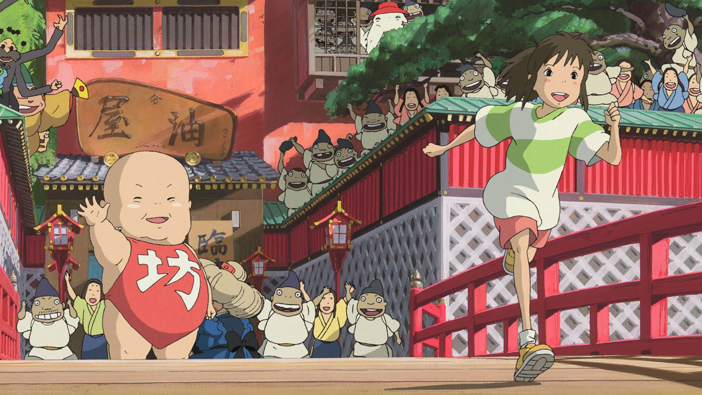
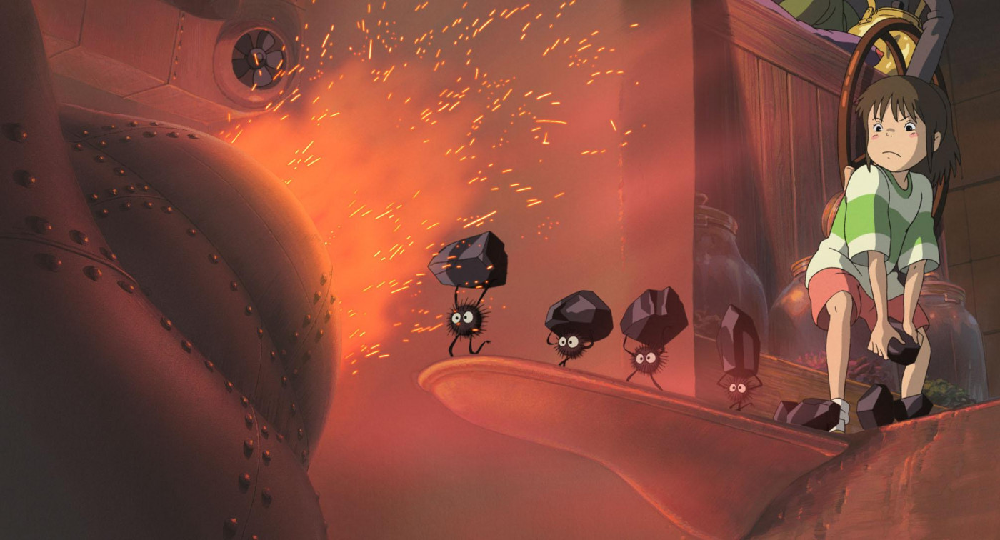
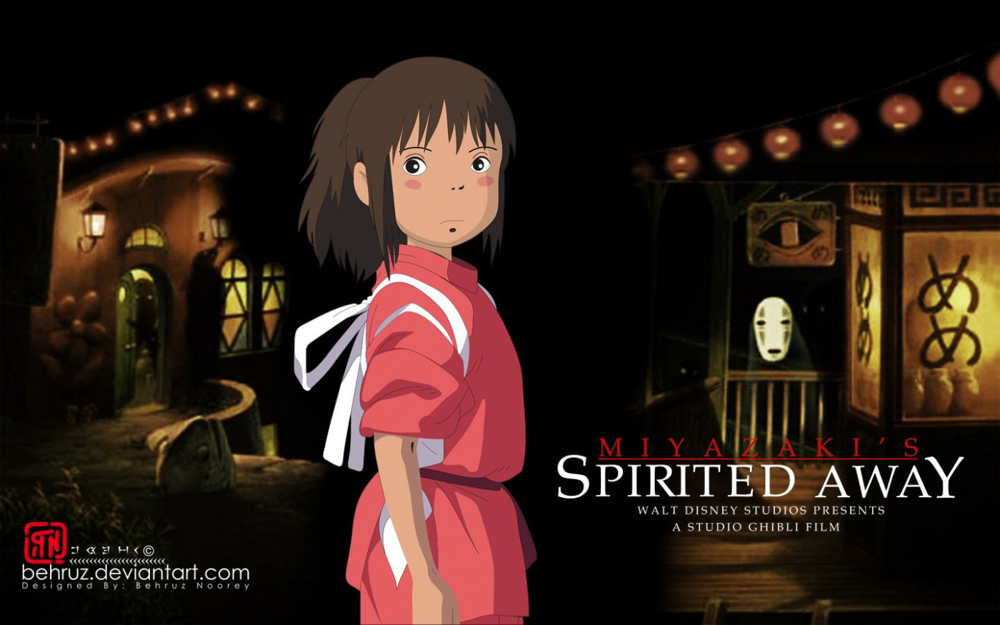
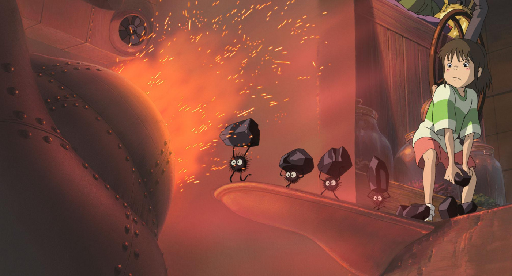
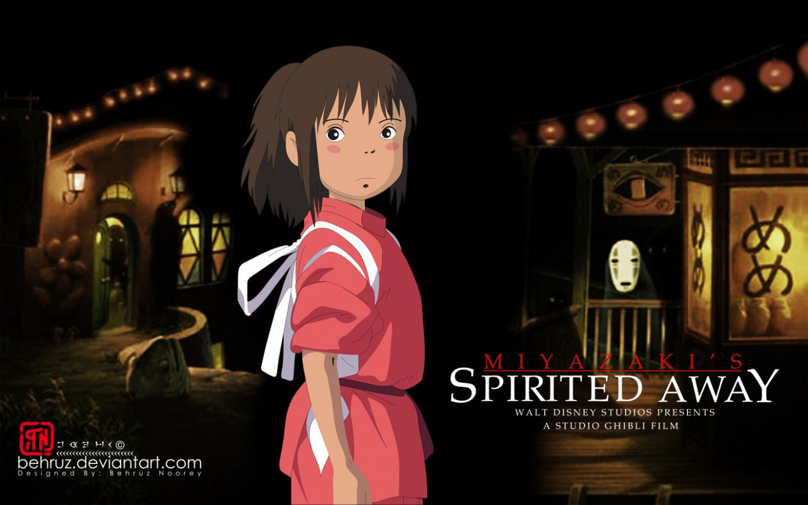

10-year-old Chihiro (Daveigh Chase) moves with her parents to a new home in the Japanese countryside. After taking a wrong turn down a wooded path, Chihiro and her parents discover an amusement park with a stall containing an assortment of food. To her surprise, Chihiro's parents begin eating and then transform into pigs. In this supernatural realm, Chihiro encounters a host of characters and endures labor in a bathhouse for spirits, awaiting a reunion with her parents.
 


